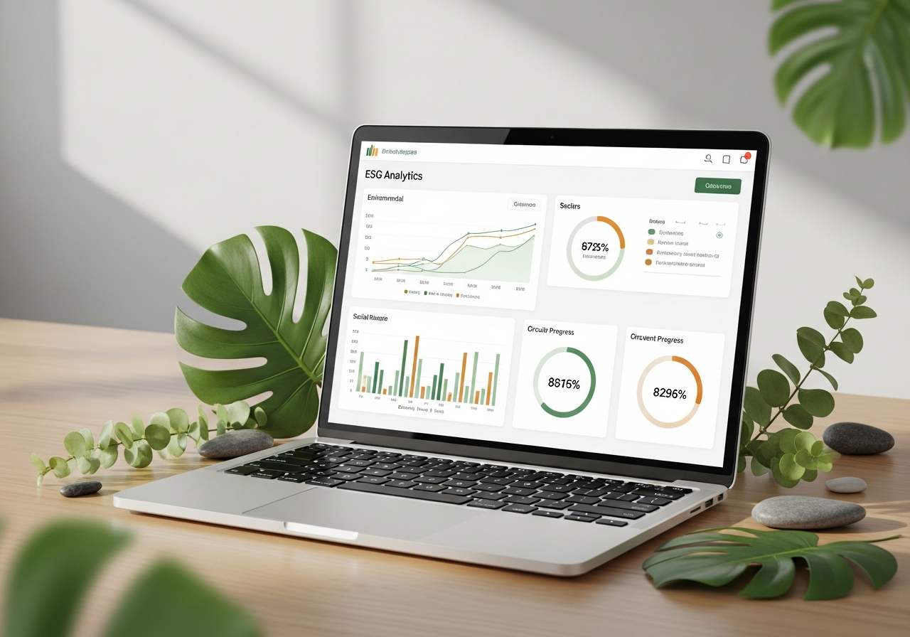

Integramos práticas ESG ao núcleo da estratégia empresarial — gerando valor, reduzindo riscos e construindo um legado positivo.
dos investidores consideram ESG essencial
de valorização em empresas com alto ESG
meta de carbono zero global
Objetivos de Desenvolvimento Sustentável — ONU
Cada pilar representa uma dimensão crítica da atuação responsável das empresas no mundo atual.
Como a empresa se relaciona com o meio ambiente — emissões, consumo de recursos, biodiversidade e mudanças climáticas.
O impacto da organização sobre pessoas — colaboradores, comunidades, clientes e cadeia de fornecimento.
Como a empresa é gerida — transparência, ética, responsabilidade da liderança e controles internos.
Ambiental, Social e Governança interconectados para resultados duradouros
Fundos ESG movimentam trilhões de dólares. Empresas bem avaliadas atraem investidores globais com mais facilidade.
Antecipar riscos ambientais e sociais protege a empresa de multas, crises reputacionais e interrupções.
Profissionais de alta performance buscam organizações com propósito. ESG fortalece a cultura e o employer branding.
Consumidores preferem marcas que demonstram compromisso com o planeta e com as pessoas. Credibilidade gera lealdade.

Uma plataforma completa para medir, monitorar e reportar suas iniciativas ESG com dados em tempo real, benchmarking setorial e relatórios prontos para investidores.
Acompanhe todos os indicadores ambientais, sociais e de governança em painéis intuitivos e personalizáveis.
Gere relatórios GRI, SASB e TCFD com um clique — prontos para stakeholders e órgãos reguladores.
Alinhe objetivos internos aos 17 ODS da ONU e monitore o progresso de cada meta ao longo do tempo.
Medir é o primeiro passo para melhorar. Acompanhe os indicadores mais relevantes de cada dimensão ESG.
Monitoramento das emissões diretas e indiretas de gases de efeito estufa em toda a cadeia.
Rastreamento do uso de água em operações, com metas de reaproveitamento e redução de desperdícios.
Representatividade de mulheres em cargos de liderança e no quadro funcional geral da empresa.
Percentual de processos auditados e em conformidade com normas legais, éticas e de governança.
Volume de resíduos industriais e operacionais destinados à reciclagem ou reutilização.
Avaliação integrada das três dimensões para benchmarking setorial e relatórios de sustentabilidade.
Participação de fontes renováveis (solar, eólica, biomassa) na matriz energética total das operações.
Volume de recursos destinados a projetos sociais, educação, cultura e desenvolvimento comunitário.
Receba conteúdo exclusivo sobre ESG, tendências e estratégias práticas diretamente no seu e-mail.